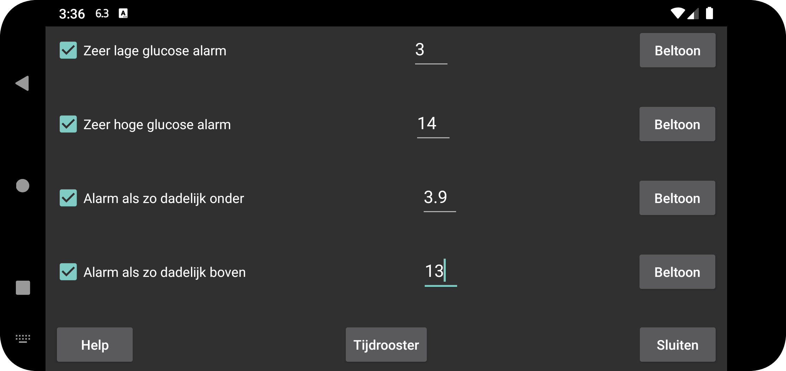

Tweede alarm voor lage glucosewaarde, dat afgaat wanneer de glucosewaarde lager is dan het alarm voor lage glucosewaarde.
Tweede hoog alarm dat afgaat wanneer de glucosewaarde hoger is dan het alarm voor hoge glucose.
Alarm die afgaat als dalende waarde zo dadelijk onder bepaalde waarde gaat komen.
Alarm die afgaat als stijgende waarde zo dadelijk boven bepaalde waarde gaat komen.
Stel een bepaald profiel in om op een bepaald tijdstip van de dag actief te worden. Zo kun je overdag en 's nachts andere glucosedrempelwaarden of beltonen gebruiken, of 's nachts het uitspreken van glucosewaarden automatisch uitschakelen.